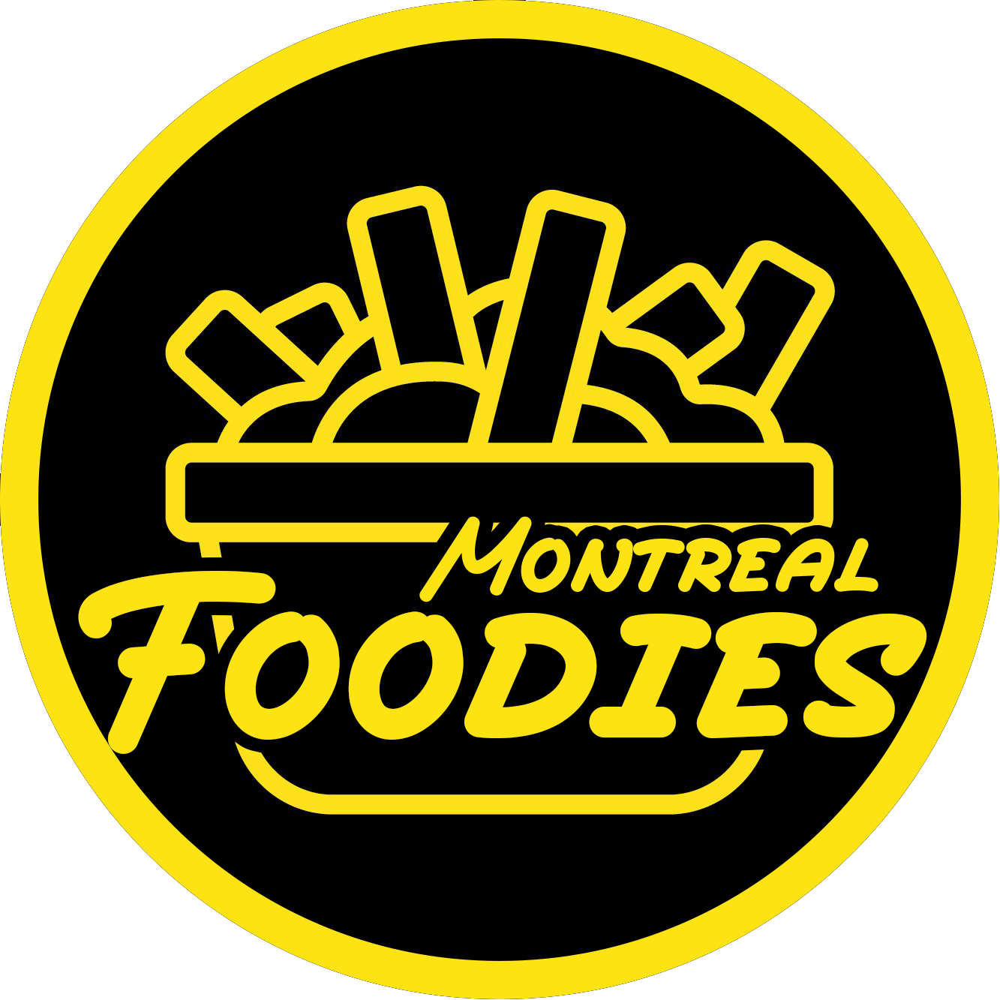

Montreal Foodies
Burger
Poutine
Pizza
Type of Cuisine
North America
Chinese
Sushi
Korean
Indian
Thai
Italian
African and Jamaican
Middle Eastern
Deserts
Chinese
Cafe Wok
Dak Hing Barbecue
Nouilles de Lan Zhou
Hong Mère
La Canting
Yin Ji Chang Fen
Aunt Dai
Liu Yi Shou Hotpot Montreal
MajesThé
Restaurant Keung Kee
Founders of Montreal Foodies:
Jason Saychareun & Musab b. Umair